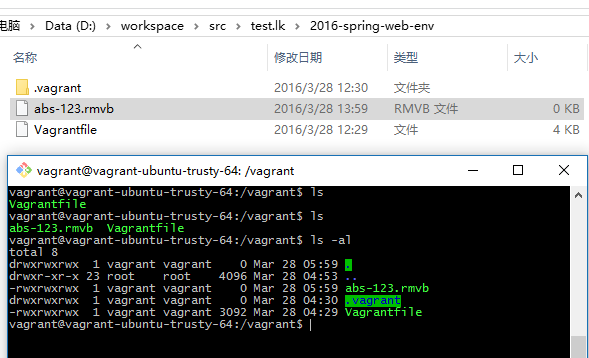
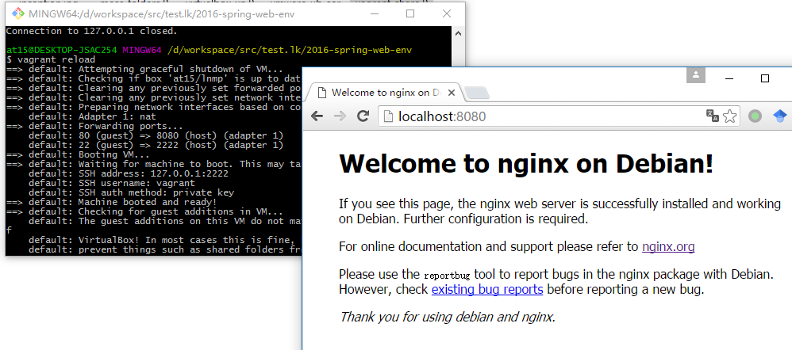
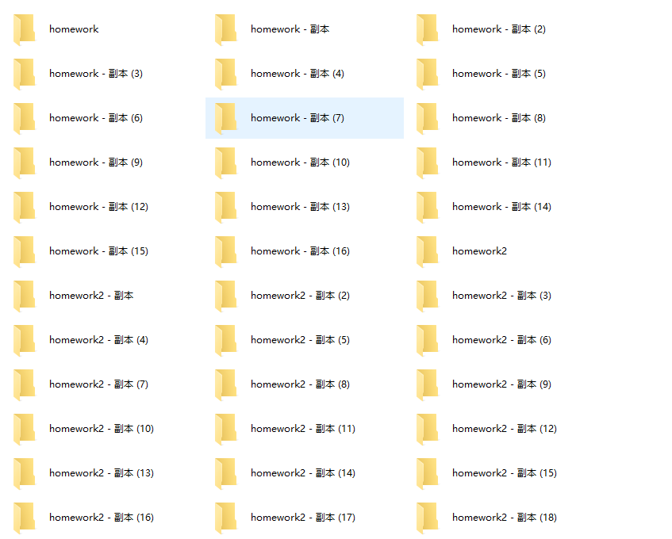

Web develop environment setup
2016 Spring Dongyue Web Studio
Created by at15
Contents
- What is environment
- Use Vagrant
- Setup local workspace
- Request lifecycle
- PHP examples
Environment
Where your code runs
- your laptop
- bare metal server
- server in cloud
Local and remote
Local:
You have full physical control, the computer you use in your daily life.
Develop and Production
Develop:
You write code and run everything on your own laptop.
Production:
Customers use your application, your code runs on remote server.
What we have
- Local develop environment
- Remote develop environment
- Local production environment
- Remote production environment
Local develop environment
- Your code
- Application and runtime to run your code
Common problems
- Code is a mess
- Bug only occurs in production
Solutions
- Use version control and organize your projects
- Have a unified environment setup
Vagrant
A unified develop environment
Create and configure lightweight, reproducible, and portable develop environment.
offical siteVagrant = virtual machine + config tools
Virtual Machine

Virtual Machine
- Vmware
- Virtual box
- Xen
- Personal + Company
- Commercial + Cloud

- Personal + Company
- OpenSource (GNU)
The Xen Project is the leading open source virtualization platform that is powering some of the largest clouds in production today. Amazon Web Services, Aliyun, Rackspace Public Cloud, Verizon Cloud and many hosting services use Xen Project software. Plus, it is integrated into multiple cloud orchestration projects like OpenStack.
Problems for using Virtual Machine
- GUI is not necessary and slow
- Can't use host editor
- Config is a pain
- Config is not portable
Vagrant Essentials
- Vagrantfile
- base image
- share folder
- port mapping
Vagrantfile
# -*- mode: ruby -*-
# vi: set ft=ruby :
Vagrant.configure(2) do |config|
# the base box is ubuntu 14.04 LTS
config.vm.box = "ubuntu/trusty64"
# need to check update
config.vm.box_check_update = true
# forward guest 80 to host 8080
config.vm.network "forwarded_port", guest: 80, host: 8080
# Use 777 for the default mount folder. which works for Ubuntu and Mac, windows always got 777
config.vm.synced_folder ".", "/vagrant", \
:disabled => false, \
:mount_options => ['dmode=777,fmode=777']
config.vm.provider "virtualbox" do |vb|
# Don't show the GUI unless you have some bug
vb.gui = false
# Customize the amount of memory on the VM:
vb.memory = "1024"
# Config the name
vb.name = "at15-lnmp"
end
end
Vagrant base box (image)
- Ubuntu 14.04 LTS ubuntu/trusty64
- LNMP Ubuntu 14.04 at15/lnmp
- LNMP CentOS by @LukeXuan
- Discover for yourself
Vagrant share folder
mount Vagrantfile folder to /vagrant by default
bi-direction
Vagrant port mapping
use Vagrant file
# forward guest 80 to host 8080
config.vm.network "forwarded_port", guest: 80, host: 8080

Vagrant commands
- vagrant init <box-name>
- vagrant up
- vagrant ssh
- vagrant halt
Vagrant commands
- vagrant reload
- vagrant destroy
- vagrant package
FAQ
- [Win] retry, connection time out -> enable VT-X
- [Win] vagrant ssh failed -> use Git Bash / Putty
- [Ubuntu] can't start after kernel update -> recompile vbox
Workspace
Organize your code
Bad example
Problems
- various source, ie: homework, project, OpenSource
- name collision, ie: fork
- too many projects, ie: gaocegege
Solutions
- use nested folders
- organize by git host, the Go way
The one fits you is the best for you